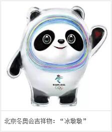

On the evening of September 17, 2019, the mascots of the 2022 Beijing Winter Olympic and Paralympic Games were unveiled at the Hockey Hall of the national winter sports training center in Shougang Park, Shijingshan District, Beijing. The mascot Bing dwen dwen, Beijing Winter Olympic Games, is called "ice pier pier", which is originated from the national giant panda. China's traditional Shuey Rhon Rhon lantern is the symbol of the Winter Olympic Games.
Pandas are recognized as China's national treasures in the world. They are friendly, lovely and charming. They are deeply loved by people all over the world, especially teenagers
The mascot Bing dwen dwen of Beijing Winter Olympic Games is designed and created with panda as its prototype. Panda image and super energyThe combination of ice crystal shell reflects the characteristics of winter ice and snow sports and modern science and technology. The shape of the head shell is taken from the ice and snow sports helmet and decorated with a color halo. It is inspired by the national speed skating Hall - "ice ribbon" of the Beijing Winter Olympic Games. The flowing bright color lines symbolize the track of ice and snow sports and 5g high technology; The heart-shaped pattern on the palm of the left hand represents the host country's warm welcome to friends all over the world. The overall image is similar to that of astronauts, which means to create extraordinary and explore the future, reflecting the infinite possibility of pursuing excellence, leading the times and facing the future.
Lanterns, with distinctive Chinese cultural characteristics and a long history of more than 2000 years, are recognized as "Chinese Symbols" in the world. It is a perfect combination of the festive atmosphere and the beautiful implication of "auspicious snow heralds a bumper year", and expresses the concept of jointly participating, working together and enjoying the Olympic Games
Shuey Rhon Rhon, the mascot of Beijing winter Paralympic Games, is designed and created with lanterns as its prototype. Lanterns represent harvest, celebration, warmth and light. The wishful shape on the top symbolizes auspiciousness and happiness; The continuous pattern composed of peace dove and temple of heaven symbolizes peace and friendship and highlights the characteristics of the venue; Decorative patterns are integrated into Chinese traditional paper-cut art; The snow block on the face not only represents the meaning of "auspicious snow heralds a bumper year", but also reflects the anthropomorphic design, highlighting the loveliness of the mascot. The lanterns are mainly colored with "China Red", which exaggerates the festive atmosphere of the Chinese Spring Festival in 2022. The body emits light, which means lighting up the dream, warming the world, representing friendship, courage and strength, and embodies the fighting spirit of the mobilization of the winter Paralympic Games and the concept of the winter Paralympic Games to inspire the world.